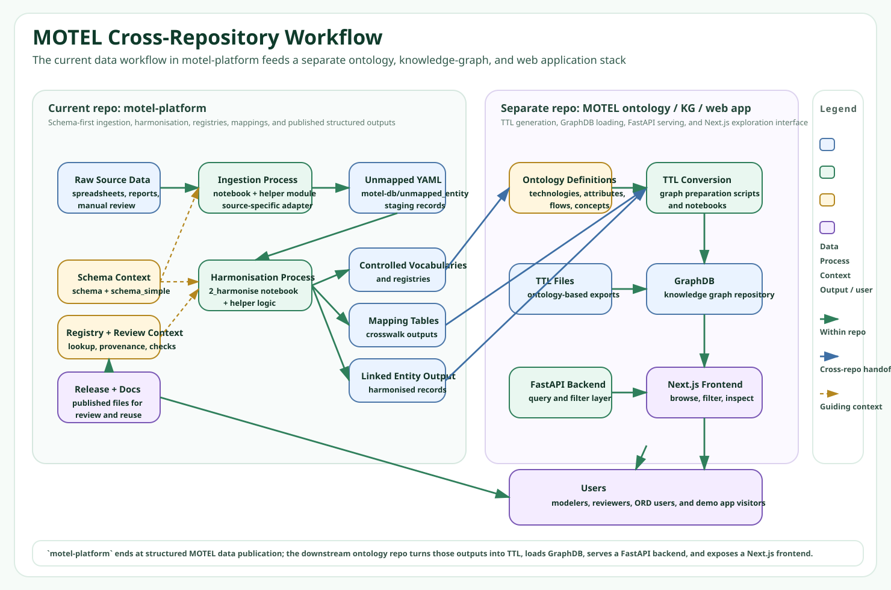

For Data Curators
Capture new records in a consistent format, track provenance, and reduce duplicate manual cleanup.
MOTEL Platform
MOTEL helps teams collect, harmonise, map, and publish technology data so model inputs are transparent, reusable, and ontology-aligned.
Energy modelers often spend significant time cleaning inconsistent source data. MOTEL provides a structured workflow and schema-first dataset so technology records become easier to compare, validate, and reuse across studies.
Capture new records in a consistent format, track provenance, and reduce duplicate manual cleanup.
Evaluate mapping suggestions, validate harmonised entities, and keep terminology aligned with controlled vocabularies.
Consume stable, ontology-ready records for downstream APIs, visualization tools, and energy system model pipelines.
Static figure version for reliable rendering on GitHub Pages.
